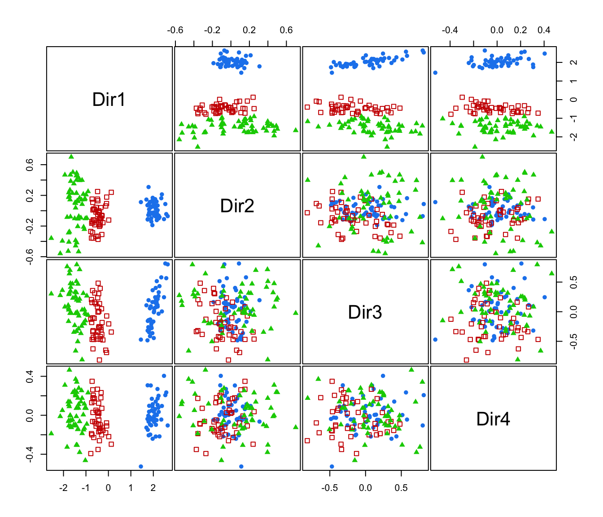
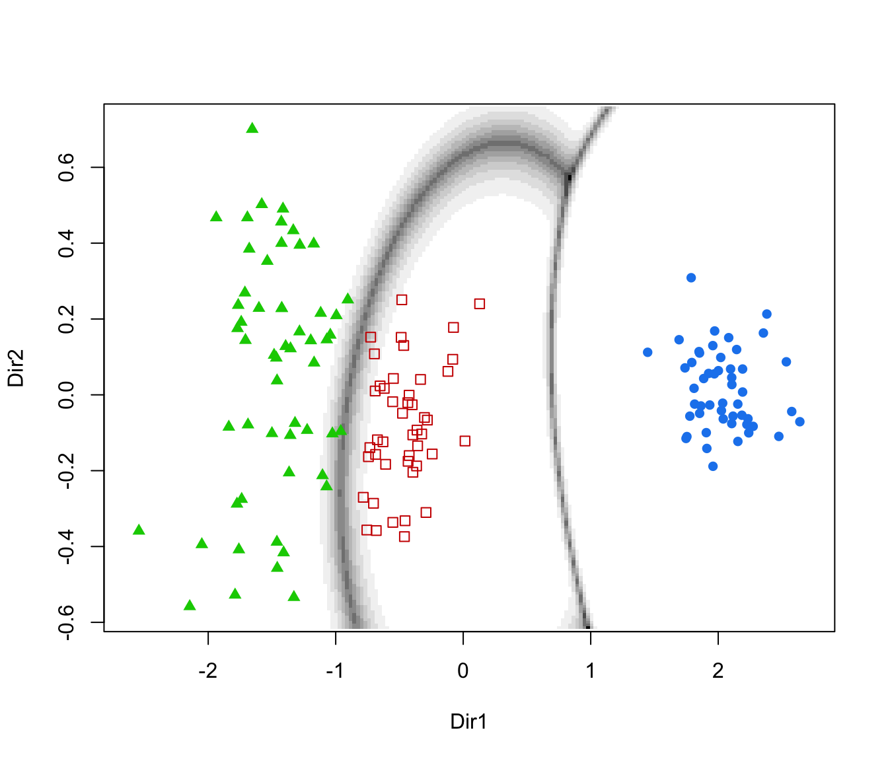
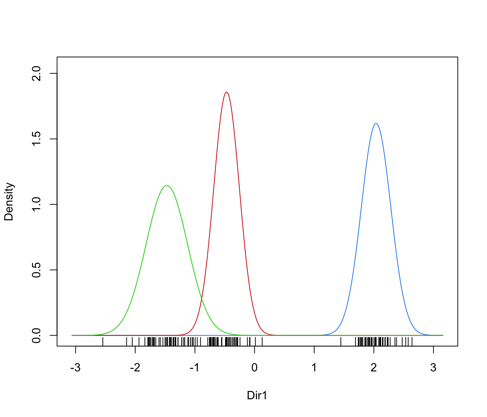
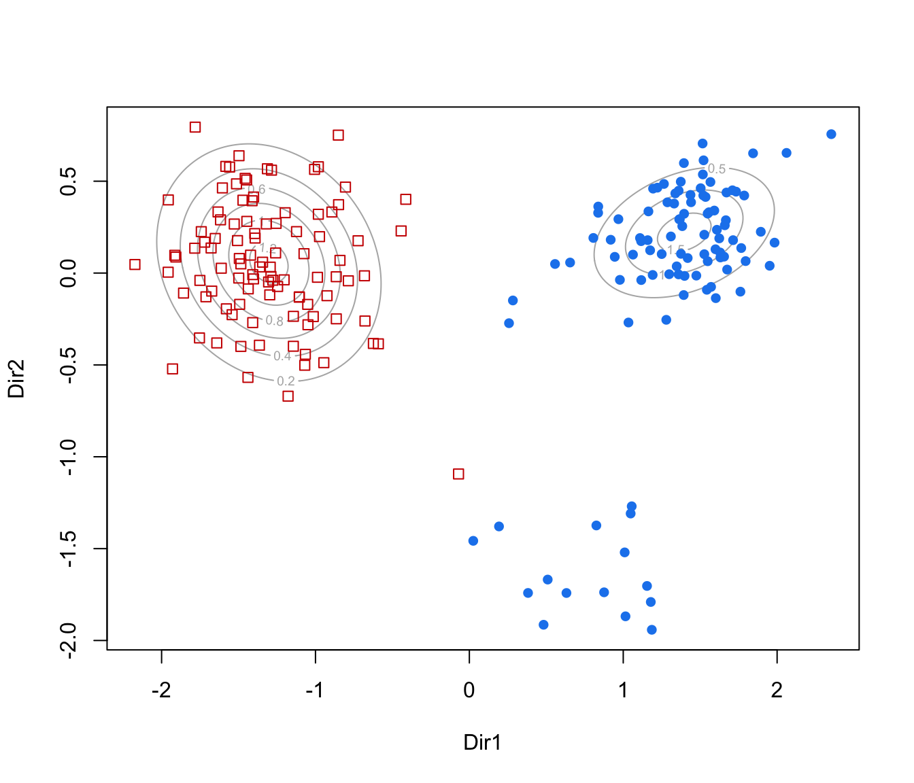
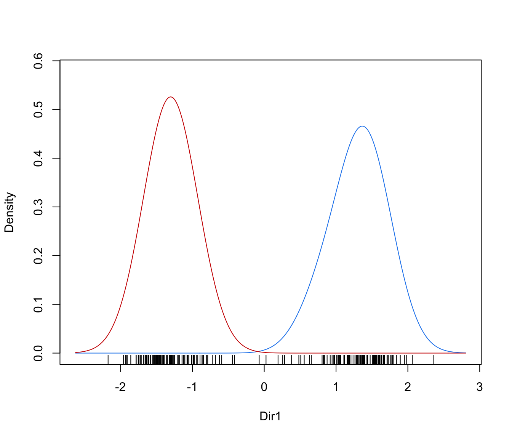

Graphs data projected onto the estimated subspace for model-based clustering and classification.
# S3 method for MclustDR
plot(x, dimens,
what = c("scatterplot", "pairs", "contour", "classification",
"boundaries", "density", "evalues"),
symbols, colors, col.contour = gray(0.7), col.sep = grey(0.4),
ngrid = 100, nlevels = 5, asp = NULL, …)
Arguments
| x |
An object of class 'MclustDR' resulting from a call to MclustDR. |
| dimens |
A vector of integers giving the dimensions of the desired coordinate
projections for multivariate data. |
| what |
The type of graph requested:
"scatterplot" =a two-dimensional plot of data projected onto the first two directions specified by dimens and with data points marked according to the corresponding mixture component.
By default, the first two directions are selected for plotting. "pairs" =a scatterplot matrix of data projected onto the estimated subspace and with data points marked according to the corresponding mixture component.
By default, all the available directions are used, unless they have been specified by dimens. "contour" =a two-dimensional plot of data projected onto the first two directions specified by dimens (by default, the first two directions) with density contours for classes or clusters and data points marked according to the corresponding mixture component. "classification" =a two-dimensional plot of data projected onto the first two directions specified by dimens (by default, the first two directions) with classification region and data points marked according to the corresponding mixture component. "boundaries" =a two-dimensional plot of data projected onto the first two directions specified by dimens (by default, the first two directions) with uncertainty boundaries and data points marked according to the corresponding mixture component.
The uncertainty is shown using a greyscale with darker regions indicating higher uncertainty. "density" =a one-dimensional plot of estimated density for the first direction specified by dimens (by default, the first one). A set of box-plots for each estimated cluster or known class are also shown at the bottom of the graph.
|
| symbols |
Either an integer or character vector assigning a plotting symbol to each
unique mixture component. Elements in colors correspond to classes
in order of appearance in the sequence of observations (the order used by
the function factor).
The default is given by mclust.options("classPlotSymbols"). |
| colors |
Either an integer or character vector assigning a color to each
unique cluster or known class. Elements in colors
correspond to classes in order of appearance in the sequence of
observations (the order used by the function factor).
The default is given by mclust.options("classPlotColors"). |
| col.contour |
The color of contours in case what = "contour". |
| col.sep |
The color of classification boundaries in case what = "classification". |
| ngrid |
An integer specifying the number of grid points to use in evaluating the classification regions. |
| nlevels |
The number of levels to use in case what = "contour". |
| asp |
For scatterplots the \(y/x\) aspect ratio, see
plot.window. |
| … |
further arguments passed to or from other methods. |
References
Scrucca, L. (2010) Dimension reduction for model-based clustering.
Statistics and Computing, 20(4), pp. 471-484.
See also
Examples




